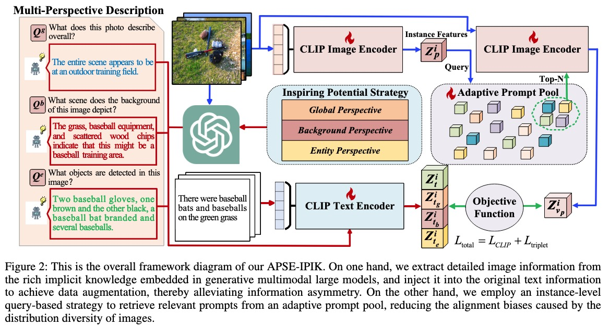
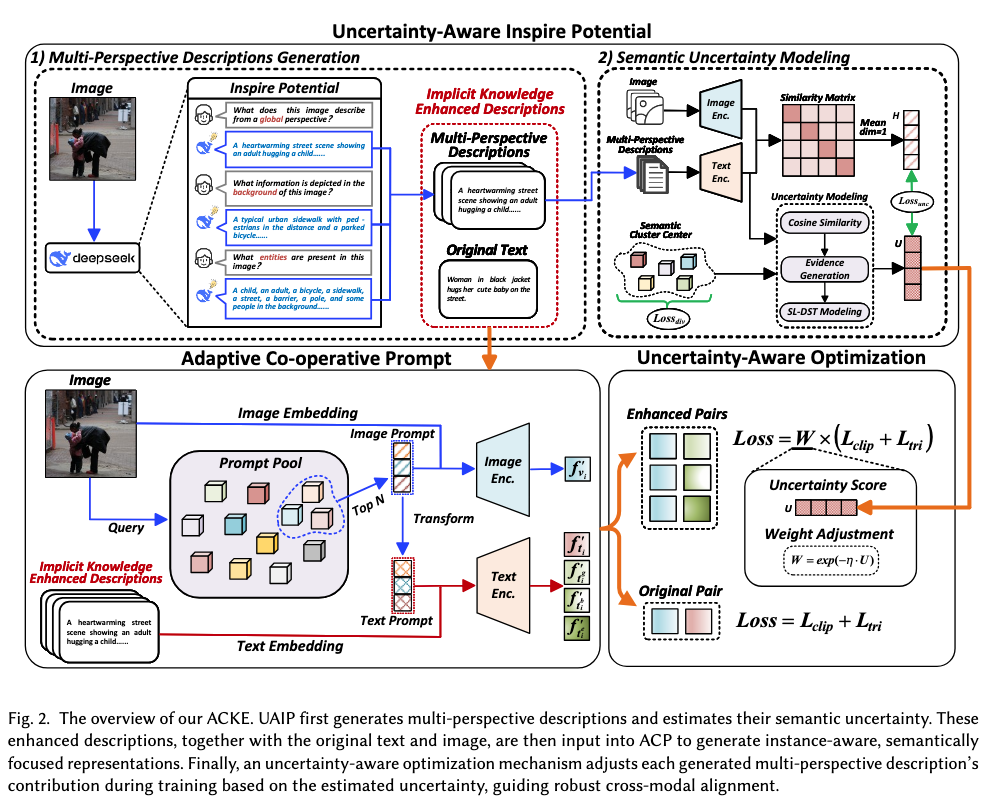
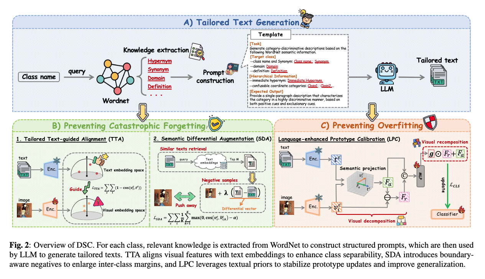

👨🎓 About Me
I am currently a Master’s student at Nanyang Normal University, working in the research group led by Xin Huang(黄鑫). My research focuses on Multimodal Analysis and Understanding and Few-shot Incremental Learning. To date, I have published three papers in leading international conferences and journals, including AAAI Conference on Artificial Intelligence, ACM Transactions on Multimedia Computing, Communications, and Applications, and IEEE International Conference on Acoustics, Speech, and Signal Processing. I have also served as a reviewer for several prominent venues, such as ICME, ICASSP, and AIES-SP.
🔥 News
- 2026.01: Our paper entitled "Adaptive Co-Operative Prompting and Uncertainty-Aware Implicit Knowledge Enhancement for Cross-Modal Retrieval" was accepted by ACM TOMM.
- 2026.01: Our paper entitled "TAILORED TEXT INTEGRATION AND SEMANTIC DIFFERENTIAL ENHANCEMENT FOR FEW-SHOT CLASS-INCREMENTAL LEARNING" was accepted by IEEE ICASSP.
- 2025.4: Our paper entitled "Adaptive Prompt-Based Semantic Embedding with Inspire Potential of Implicit Knowledge for Cross-Modal Retrieval" was accepted by AAAI.
📘 Selected Publications
🏃♀️ Cross-Modal Retrieval

Xin Huang(supervisor),Shilong Wang et al.
- This paper addresses inter-modal information asymmetry and intra-modal distribution diversity in cross-modal retrieval. We propose APSE-IPIK, which injects multi-perspective implicit knowledge generated by large multimodal models and dynamically selects instance-relevant prompts through an adaptive prompt pool.

Xin Huang(supervisor),Shilong Wang et al.
- This paper extends APSE-IPIK by introducing Adaptive Co-operative Knowledge Enhancement (ACKE). It integrates an Uncertainty-Aware Inspire Potential strategy, which quantifies semantic reliability via Dempster–Shafer Theory, and an Adaptive Co-operative Prompt mechanism for cross-modal collaborative guidance.
🛡️ Few-Shot Class Increment Learning

Xin Huang(supervisor),Shilong Wang et al.
- This paper proposes Discriminative Semantic Consolidation (DSC) for Few-Shot Class-Incremental Learning to jointly mitigate catastrophic forgetting and few-shot overfitting. By leveraging tailored LLM-generated textual priors, we introduce tailored text-guided alignment, semantic differential augmentation, and language-enhanced prototype calibration to enhance class separability and stabilize prototype updates.
📋 Services
- 2026.3, Reviewer, ICME 2026
- 2026.1, Reviewer, ICASPP 2026
- 2025.8, Reviewer, AIES-SP 2025
🎓 Experiences
- 2023.09 - Now, M.S., Nanyang Normal University, Computer Technology
- 2019.09 - 2023.06, B.E., Nanyang Normal University, Network Engineering